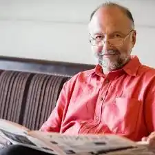
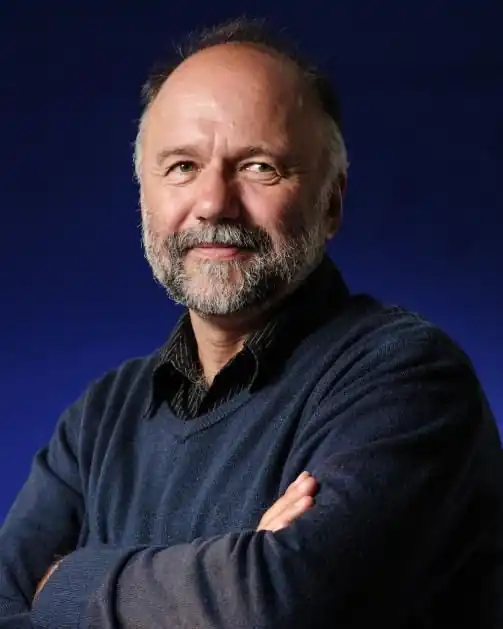

Андрій Курков народився 23 квітня 1961 року у російському селі Будогощ Ленінградської області. З раннього дитинства живе у Києві.
Після школи працював завклубом, завідувачем бібліотеки в санаторії в Пущі-Водиці, діловодом тощо. Також закінчив курси перекладачів японської мови в Інституті інформації (на "Либідській").
1983 — закінчив Київський державний педагогічний інститут іноземних мов. Працював випусковим редактором багатотиражки Київського політеху, редактором видавництва "Дніпро". У віці 24-х років пішов служити на альтернативну службу: з 1985 до 1987 служив охоронцем в Одеській виправній колонії № 51. Перша публікація — гумореска у київському виданні "Рабочая газета" у 1979 році. Перший сценарій до фільму "Поляна сказок" (працював як "літературний раб": у титрах сценаристом зазначено Кіра Буличова, який за нього отримав приз на Братиславському кінофестивалі). Працював сценаристом на кіностудії О. Довженка, викладав у Белл Коледжі (Кембридж, Англія). З 1988 член англійського ПЕН-клубу. Член Спілки кінематографістів України (з 1993) та Національної спілки письменників (з 1994). З 1998 — член Європейської кіноакадемії. З 1998 — постійний член журі премії Європейської кіноакадемії "Фелікс". У 2011 входить до складу журі літературного конкурсу "Юне слово". Одружений з ірландкою Елізабет Шарп (консультант у Британській раді в Україні), виховує трьох дітей. Дитячу книжку українською Курков вперше написав 2014 року; це була казка "Маленьке левеня і львівська мишка" для видавництва ВСЛ. Дорослу нехудожню книгу українською Курков вперше написав 2017 року; це була публіцистична біографічна книга у жанрі нон-фікшн "Рух "Емаус": Історія солідарності" для видавництва Астролябія. Дорослу художню книгу українською Курков вперше написав 2020 року; це був пригодницький роман "Ключі Марії" (робоча назва "Іній в очах її") для видавництва Фоліо (у співавторстві з Юрком Винничуком).